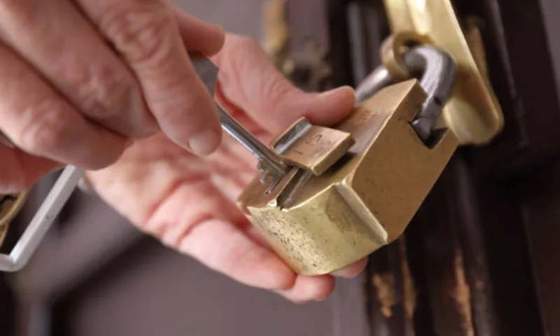

Следы взлома на замке
Если цилиндр провернули, корпус деформирован или ключ заедает после попытки вскрытия, замок лучше менять сразу, без ожидания повторной поломки.
Срочно меняем замок после попытки взлома и восстанавливаем безопасность двери. Усиливаем посадочное место, подбираем совместимый механизм и фиксируем стоимость до начала работ.

Если цилиндр провернули, корпус деформирован или ключ заедает после попытки вскрытия, замок лучше менять сразу, без ожидания повторной поломки.
После силового воздействия может повести ответную планку и крепления. В этом случае важно не только заменить механизм, но и восстановить геометрию узла.
Если есть вероятность, что ключевой профиль скомпрометирован, безопаснее установить новый механизм повышенного класса защиты.
| Услуга | Работа | Механизм | Итого |
|---|---|---|---|
| Замена цилиндрового замка после взлома | от 1 200 ₽ | от 1 300 ₽ | от 2 500 ₽ |
| Замена сувальдного замка после взлома | от 1 500 ₽ | от 1 500 ₽ | от 3 000 ₽ |
| Восстановление посадочного места + замена замка | от 1 500 ₽ | от 2 000 ₽ | от 3 500 ₽ |
Точная цена зависит от модели двери, состояния посадочного места и выбранного замка. Окончательную стоимость согласовываем до старта работ.
| Ситуация | Подходящая услуга | Куда перейти |
|---|---|---|
| Нужна срочная замена после попытки вскрытия | Замена замка после взлома | Вы на нужной странице |
| Корпус исправен, требуется заменить только цилиндр | Замена личинки/цилиндра | Страница услуги |
| Нужна более общая услуга по всем типам дверных замков | Замена дверных замков | Страница услуги |
После работ фиксируем итог в заказ-наряде и выдаем гарантию на установку. Условия гарантии проговариваем до начала монтажа.
Стоимость включает диагностику, демонтаж, установку и проверку хода ригелей. Дополнительные работы обсуждаем заранее и не добавляем постфактум.
После монтажа мастер показывает корректное закрытие двери и объясняет, как продлить срок службы нового механизма.
| Зона | Примеры районов/локаций | Среднее время прибытия | Условия выезда |
|---|---|---|---|
| Санкт-Петербург | Невский, Приморский, Выборгский, Московский, Фрунзенский, Центральный, Калининский | от 30 мин | Ежедневно 08:00-22:00 |
| Юг и юго-запад СПб | Кировский, Красносельский, Пушкинский, Колпинский, Адмиралтейский | 30-45 мин | По загруженности дорог |
| Север и северо-запад СПб | Приморский, Выборгский, Петроградский, Василеостровский, Курортный | 30-45 мин | По согласованию с оператором |
| Ближайшие пригороды | Мурино, Кудрово, Шушары, Парголово, Сестрорецк | 45-60 мин | Возможна доплата за выезд за КАД |
| Ленинградская область | Всеволожский, Гатчинский, Тосненский и другие районы | от 60 мин | Уточняется при оформлении заявки |
Точное время прибытия зависит от адреса и дорожной ситуации. При звонке оператор сразу называет реалистичный интервал и подтверждает условия выезда.
01
Ситуация: после попытки вскрытия цилиндр заклинил, дверь закрывалась с усилием. Решение: демонтировали поврежденный узел, заменили механизм и проверили работу ригелей по всем режимам. Результат: дверь снова закрывается штатно, доступ посторонних исключен.
 02
02
Ситуация: после повреждения замка дверь начала клинить. Решение: усилили посадочное место, заменили механизм на более защищенную модель и настроили работу ригелей. Результат: восстановлена штатная работа замка и повышена защита входной группы.

03Ситуация: после силового воздействия ригели не попадали в ответную часть. Решение: восстановили посадочное место и поставили новый совместимый замок. Результат: устранены перекосы, дверь работает без заеданий.
После попытки взлома замок нельзя оценивать только по внешнему виду. Даже если дверь еще открывается и закрывается, внутренние элементы механизма, цилиндр, ригели или крепления могут быть уже повреждены. Поэтому такая страница рассчитана на коммерческий интент, где клиенту важно не просто “поставить новый замок”, а быстро восстановить безопасность после конкретного инцидента. Услуга нужна после следов вскрытия, деформации личинки, проворота ключа, повреждения накладок или явной попытки силового воздействия на дверь. Если доступ в помещение потерян полностью, параллельно может понадобиться аварийное вскрытие замков перед последующей заменой.
Сначала мастер осматривает не только замок, но и саму дверь, чтобы понять, не пострадали ли коробка, посадочное место, ригельная часть и ответная планка. После попытки взлома важна именно комплексная оценка, потому что установка нового механизма в поврежденный узел может дать короткий эффект и не вернуть нормальную защиту. Затем подбирается подходящий вариант: замена цилиндра, установка нового корпуса, переход на более надежный замок или усиление узла запирания. Если повреждения затронули входную группу шире, логично также смотреть сценарий замены замка входной двери. После монтажа мастер проверяет работу механизма, плотность закрывания и стабильность двери под нагрузкой.
Вопрос: Нужно ли менять замок, если после взлома он еще работает?
Ответ: В большинстве случаев да, потому что внутренние повреждения могут быть неочевидны, а риск повторной проблемы остается высоким.
Вопрос: Можно ли усилить защиту сразу после замены?
Ответ: Да, при необходимости мастер предложит более надежный механизм или дополнительные меры по защите двери.
Вопрос: Сколько занимает восстановление после такого повреждения?
Ответ: Срок зависит от степени деформации двери и механизма, но типовые ситуации часто удается закрыть за один визит.
CTA (мягкий): Если на замке есть следы взлома или безопасность двери нужно восстановить срочно, оставьте заявку через страницу контактов и согласуйте выезд мастера на ближайшее время.
Оставьте телефон. Мастер перезвонит, уточнит задачу и согласует удобное время выезда.